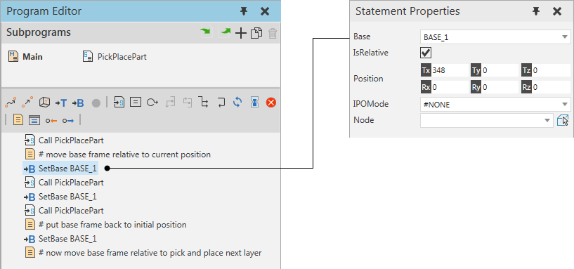

A Define Base statement changes the properties of a base frame in robot during a simulation. When you reset a simulation, the base frame returns to its initial position.

Note: A base frame can be used as a base coordinate system for motion statements. Moving a base frame would also move any motion statements referencing that base frame. Generally, a Define Base statement is used in robot programs involving the stacking and unstacking of parts.
| Name | Description |
| Base | Defines the base frame of robot controller altered by statement.
Note: You cannot use a Define Base statement to alter a base frame in a different robot. |
| IsRelative | Defines if Position is based in base frame coordinate system or its parent coordinate system.
True uses base frame coordinate system, so frame will be moved relative to its location at the time of statement execution. False uses the parent coordinate system of base frame defined in Node, so frame will be moved to an absolute location. |
| Position |
Defines the position and orientation of Base. |
| IPOMode | Defines the interpolation mode of the frame and the external configuration of a referencing robot controller.
#NONE has no effect and is the default setting. #BASE sets the base frame to act as a base coordinate system. #TCP sets the base frame to act as a tool center point. Note: A conflict can occur if a base-tool pair in a referencing robot have the same IPOMode property value or cannot be used with the current configuration of robot. |
| Node | Defines the node the base frame is attached to in 3D world.
Note: If None, base frame is attached to Robot World Frame. |